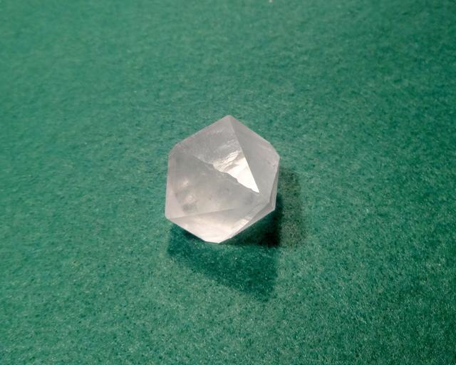

Potassium Sulfate
Potassium sulfate K2SO4 is a salt of potassium and sulfuric acid. It is colorless, water-soluble crystalline solid, mainly used as fertilizer. 
{kind=link}
Properties
-
Crystal system: Orthorhombic
-
Mineral name: Arcanite
-
Crystal shape: apparently, hexagonal bipyramid. I don't know how it is compatible with orthorhombic crystal system. Probably, twinning?
-
Stability on air: very stable. Also, it is one of the hardest soluble materials.
Growing notes
Solubility in water: 12g/100ml at room temperature.
Grows slowly because of low solubility. Solution is prone to bacterial infestation and mold growth. To get rid of it, filtering and boiling solution (without crystal, of course) sometimes helps. Also, adding few drops of iodine tincture also prevents infestation for some time.
Safety
Potassium sulfate is not toxic. Fertilizer-grade compound may contain significant amounts of potassium carbonate (K2CO3) which can irritate skin because if its alcaline pH.
Obtaining
- Fertilizer stores (usually requires filtering and recrystallization)
- Chemicals shops
- Synthesis is not practical since source reagents are more expensive than the product, but possible:
- 2KOH + H2SO4 → K2SO4 + H2O
Reaction is highly exotermic, solution starts boiling! - K2CO3 + H2SO4 → K2SO4 + H2O + CO2
Produces lots of gas, beware acidic foam.
- 2KOH + H2SO4 → K2SO4 + H2O
{kind=link}
{kind=link}